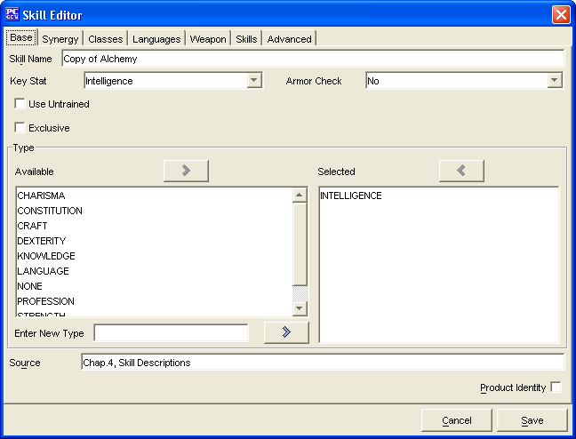

The Base Tab has everything required to make a new Skill. The remaining tabs are for more advanced Skill creation. The Skills created will be saved into the data/custom directory under the name of customSkills.lst.
The Skill Name is where you will enter the name for your Skill.
The Key Stat determines which statistic bonus will be used with this skill
The Armor Check determines whether the armor check penalty is applied or not and whether weight has an impact on the skill
The Use Untrained flag determines if the skill can be used if no ranks are taken
The Exclusive flag determines if only some classes can obtain skill ranks
The two Type windows, Available and Selected are used to create a list of types of Skills.
The Source field is a text window for listing what source material the Skill is from. If it is a custom created Skill, then you can leave this blank or simply put in "custom"
The Product Identity checkbox is to denote if the Skills's name being created is the Product Identity of a publisher
The Cancel and Save buttons, which appear on every tab, are used to either cancel the Skill creation or save it to the customSkills.lst file.